Simple asks. Too many clicks.
- Sign in
- Duo code
- ENGIN 125
- Assignments
- Scroll…
- Open app
- Search
- Menu
- Add to cart
- Checkout
- Pay
- Sign in
- Billing
- Top up
- Enter amount
- Pay
Anything you can click, you can ask.
If a person can do it in the website, their agent should be able to do it by asking.
We build MCParrot by the same rule. Each feature on its app page should also work by asking ChatGPT.
The interface is cheap. The data is what matters.
The interface
Anyone can vibe-code one now.
The data behind it
{ "assignment": "E3: Final Analysis",
"due": "Oct 29, 11:59 PM",
"status": "unsubmitted" }
Browse once. Ask forever.
1. Browse the site
Our Chrome extension watches what the site asks its server for.
2. Claude finds tools
“List my assignments.” “Read the syllabus.” You keep the ones you want.
3. ChatGPT uses them
Through one private link. Each tool calls the site’s own data API, with no clicking.
Browser Use keeps a cloud browser signed in as you for each website, so every call reaches your account.
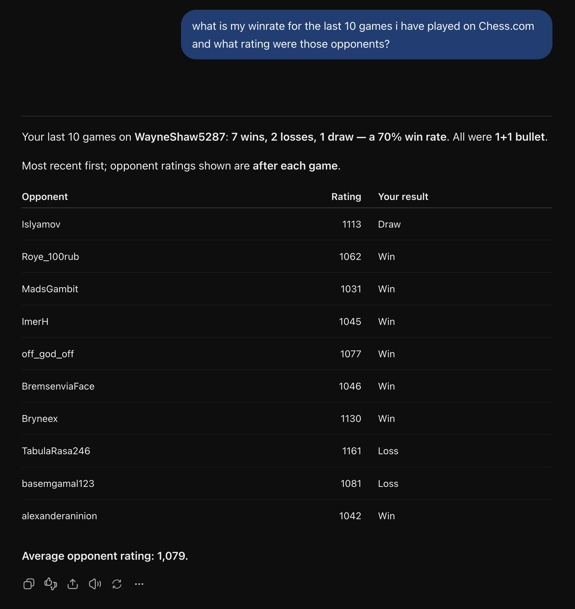
1 2 3Any website, not just school.
- A question about Chess.com
- All ten games: 7 wins, 2 losses, 1 draw
- Average opponent: 1,079
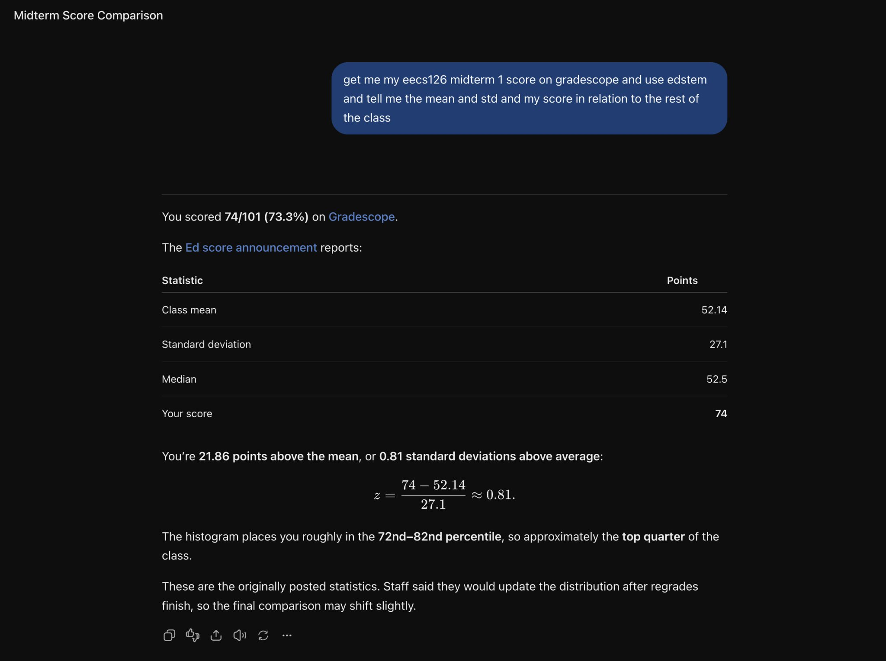
1 2 3Two websites, one answer.
- Score from Gradescope
- Class stats from a chart on Ed, read by Claude
- Combined: 0.81 above the mean
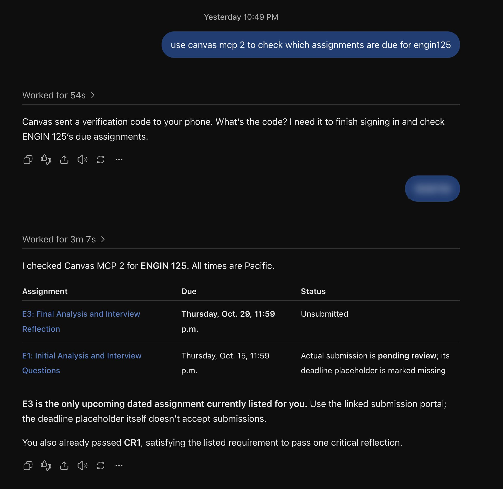
1 2 3Signed out? It signs back in.
- A Browser Use agent signs in for you
- You type the texted code in ChatGPT
- Then it lists the assignments
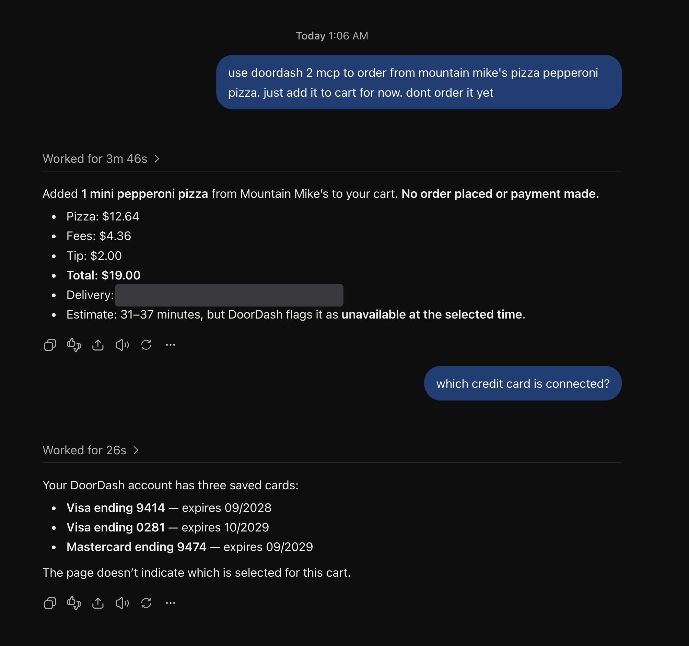
1 2 3It shops. It pays only when you say so.
- “Add it to my cart. Don’t order yet.”
- A Browser Use agent builds the cart
- On your OK, it checks out with Stripe Pay with Link, within your limit
Not a browser bot. Browser Use is how it signs in as you.
MCParrot does
- Calls the website’s own data API. No clicking through screens, so answers are fast and exact.
- Builds the tools with Claude from one recording of you browsing.
- Sends ChatGPT a small answer, not a whole page.
Browser Use does
- Stays signed in as you, with one cloud browser for each website. You sign in once in a live view, Duo included.
- Signs back in when the site logs you out. The AI never sees your password.
- Checks out with Stripe Pay with Link when you say yes.
- Next: MCParrot test-runs every new tool before ChatGPT sees it.
- Next: ChatGPT can set up a new website by itself.
- Next: you can run MCParrot itself by asking ChatGPT.
Thank you. Questions?
Product tour
The MCParrot app, one screen at a time. The same rule applies here: anything you click on these screens should also work by asking ChatGPT.
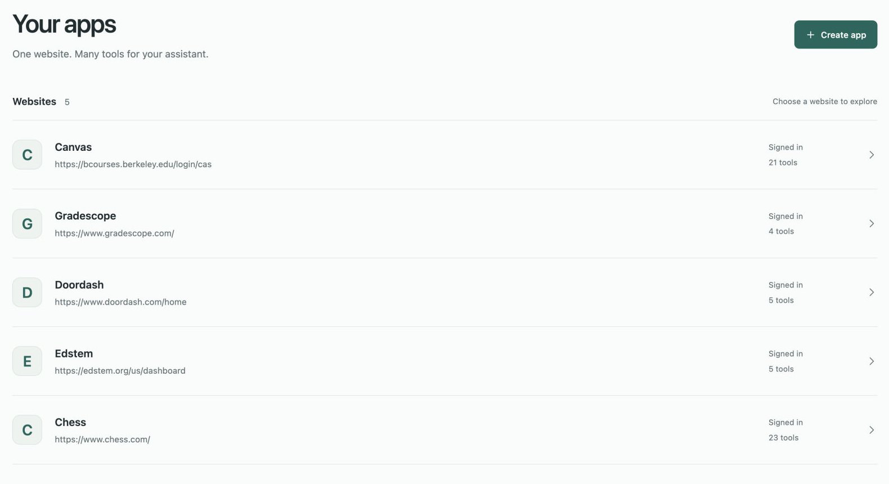
1 2Every website, in one place.
- Each one signed in, with its own tools
- Add another website
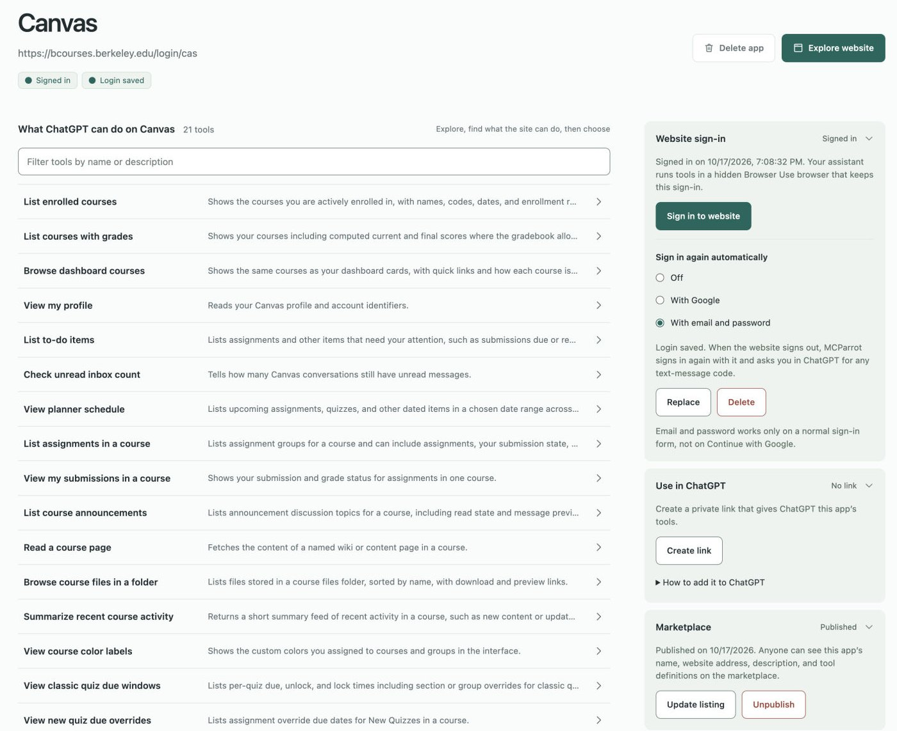
1 2 3 4One app per website.
- What ChatGPT can do on Canvas
- Your sign-in, saved
- The private link for ChatGPT
- Shared on the Marketplace
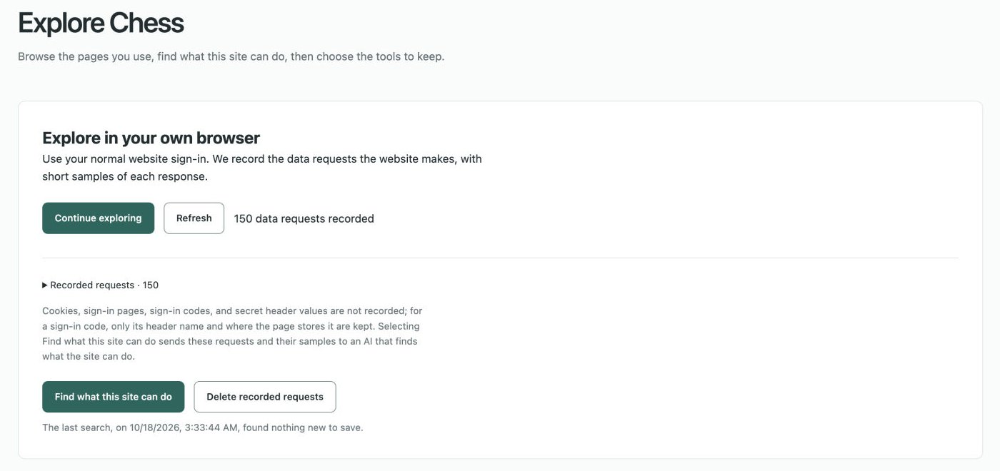
1 2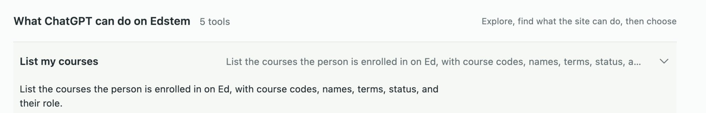
3Browse, then let Claude find the tools.
- Recorded while you browsed
- Find what this site can do
- Claude turned recordings into tools like this
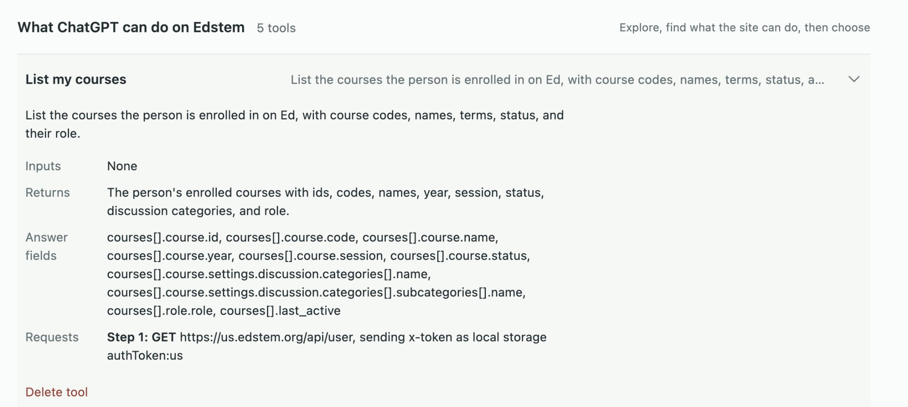
1 2 3Every tool is readable.
- What it needs and what it returns
- The only fields ChatGPT gets
- The exact request it sends, with no secret saved
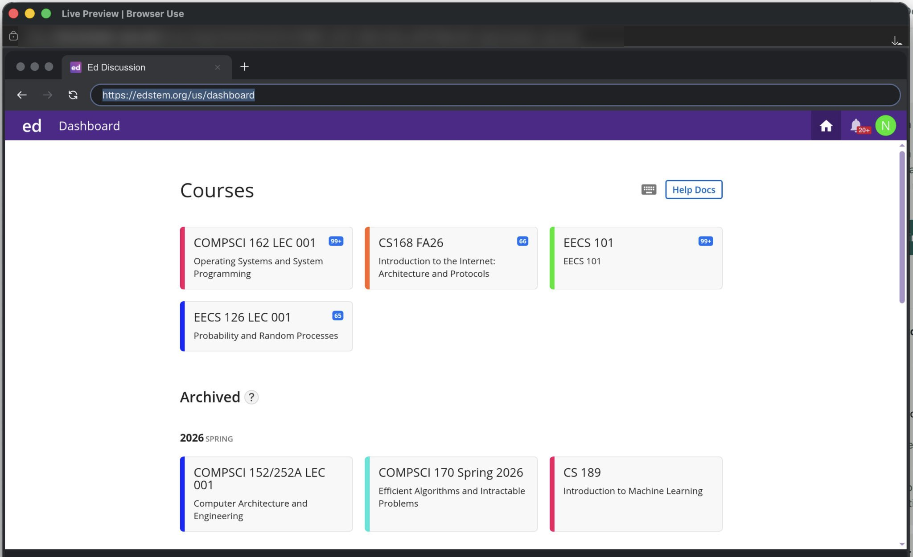
1 2Sign in once, yourself.
- A live view of your Browser Use browser
- Signed in to Ed, as you
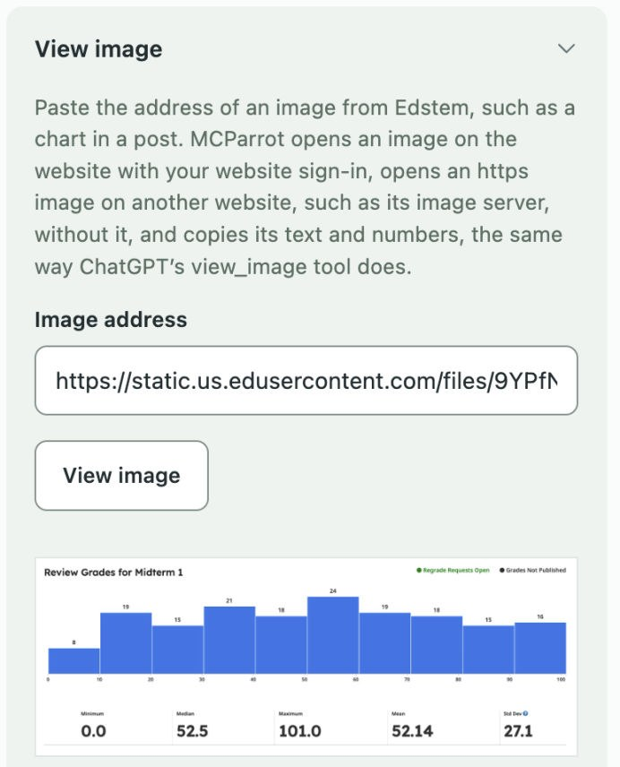
1 2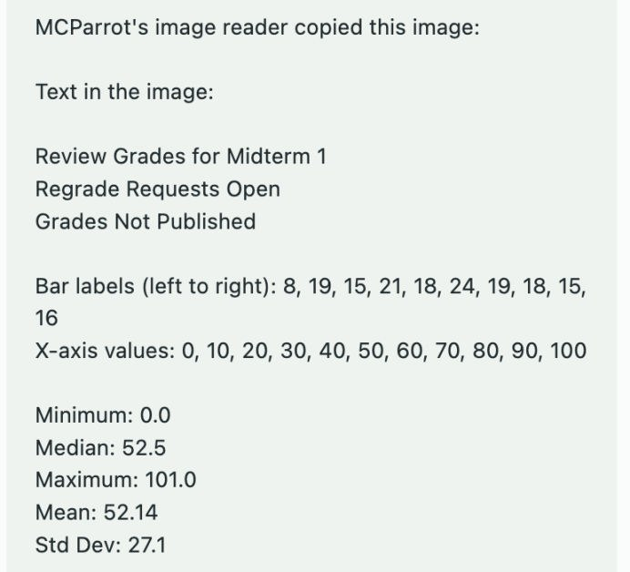
3Claude reads the chart, so ChatGPT can.
ChatGPT drops pictures that tools send, so MCParrot has Claude turn the picture into text.
- The picture’s address on Ed
- The chart
- Every number, copied as text
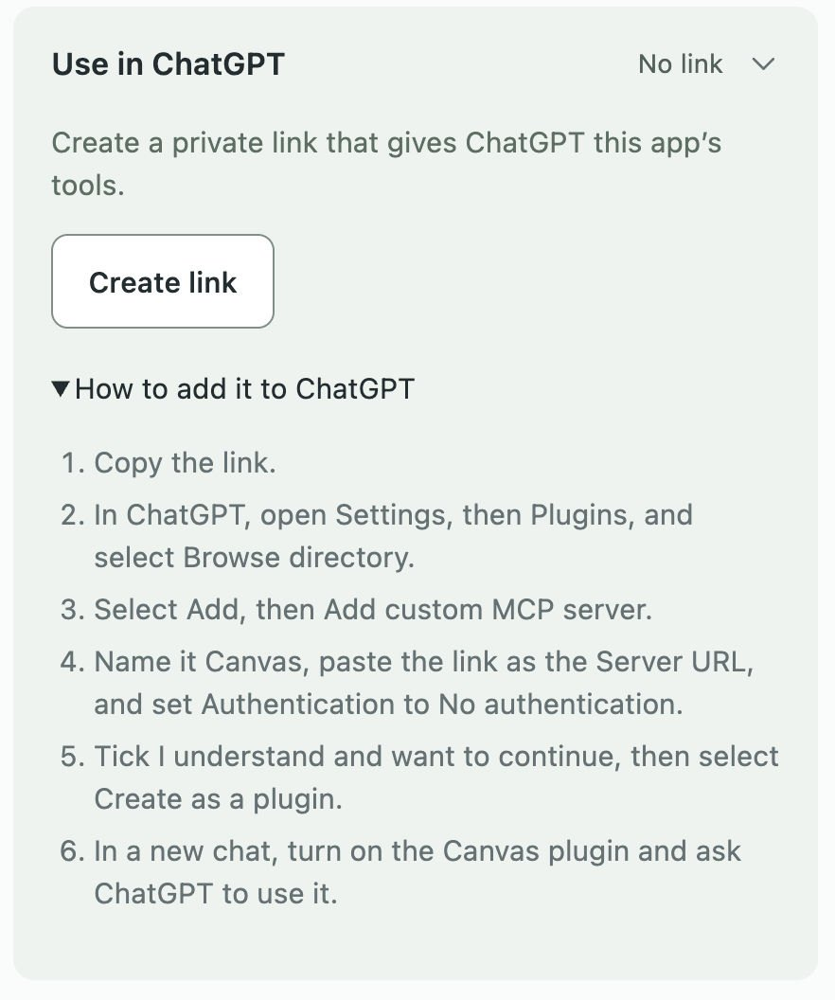
1 2One private link per website.
- Create the link
- Paste it into ChatGPT once
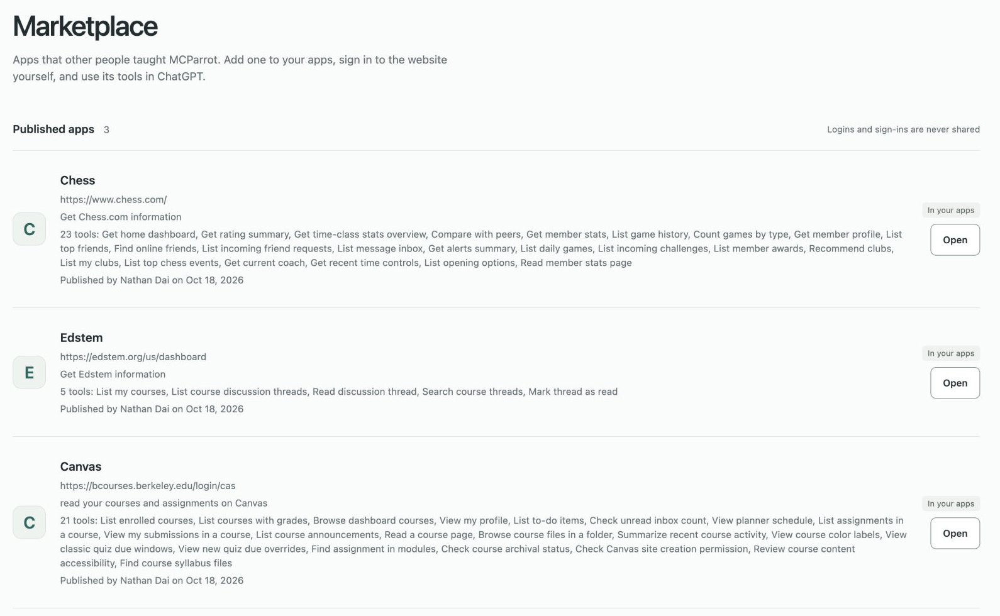
1 2 3Community tools for the websites everyone uses.
- Apps others published, with their tools
- Logins are never shared
- Add one, then sign in yourself
Appendix: questions judges may ask
How the pieces connect.
You browse
In your own Chrome
Chrome extension
Records, without secrets
MCParrot
Next.js on Vercel
Claude Opus 5.5
Suggests tools
Upstash Redis
Saved tools
ChatGPT
Your question
MCParrot
Loads the saved tool
Browser Use
Cloud browser, your profile
The website
Its own data API
MCParrot also uses Clerk to know whose apps are whose, and Sentry to report its errors and slow steps.
A tool is a recipe, not a key.
It never stores passwords, cookies, or sign-in tokens. When it runs, it reads the token fresh from your signed-in browser. That is why tools can be shared on the Marketplace.
List assignments in a course
- Address
/api/v1/courses/{courseId}/assignments- Input
courseId- Answer fields
name,due_at,submission- Sign-in
- Read from your browser when it runs
Example tool.
How answers get smaller.
- When you select Find what this site can do, Claude sees sample answers and picks the fields a person needs for each tool, such as title, author, date, and text.
- MCParrot saves that list with the tool and filters every answer with it, without AI.
- Long lists become tables. ChatGPT can still ask for the full answer.
Tokens ChatGPT reads
30 Ed discussion threads
DoorDash home feed
Measured on sample data: 73–80% fewer tokens than the raw cleaned answer.
What Sentry led us to fix.
Each error on the live site led to a change. From the first evening, an agent also checked Sentry every 60 seconds.
| Sentry showed | Cause | Fix |
|---|---|---|
| DoorDash tool: request returned 400 | The extension cut request bodies at 2,000 characters, so Claude never saw DoorDash’s real query | Record whole bodies, up to 30,000 characters |
| “Too much was recorded” | DoorDash’s ad-tracker addresses were over 2,000 characters long | Shorten long addresses instead of refusing the recording |
| Playwright file missing on Vercel | The build left out a file the browser library needs | Include it in the build |
| Claude discovery could not write a file | Vercel’s home folder is read-only | Point the Cursor SDK at a writable folder |
| “Unsupported protocol version” | ChatGPT tries a newer MCP version first, then falls back | Expected, so stop reporting it |
Recording without leaking secrets.
Kept
- What each page asks the server for, with short answer samples
- Request headers that are not secret
- The name of a sign-in token, never its value
Dropped
- Cookies and passwords
- Anything that looks like a sign-in token
- Sign-in pages
What a tool does when ChatGPT calls it.
- Stays on the website. Any address under the same domain, such as
us.edstem.orgforedstem.org. - Reads the sign-in token at run time. Ed keeps one in the browser’s local storage; the tool reads it inside the page, so it is never saved.
- Passes the anti-forgery check. Many sites need a fresh one-time code from their own page on each change (a CSRF token). The tool reads it from the page first.
- Chains steps. One request can use a value from an earlier answer, such as a cart ID.
- Reads pictures. Claude copies a picture’s text and numbers for ChatGPT.
Paying safely.
- You confirm the exact total in ChatGPT first.
- A one-time Pay with Link card, so the agent never sees your real card.
- The server refuses above your spending limit.
- It checks the total again before paying and stops if it changed.
- Ordinary tools can never pay: a guard blocks any checkout or payment request.